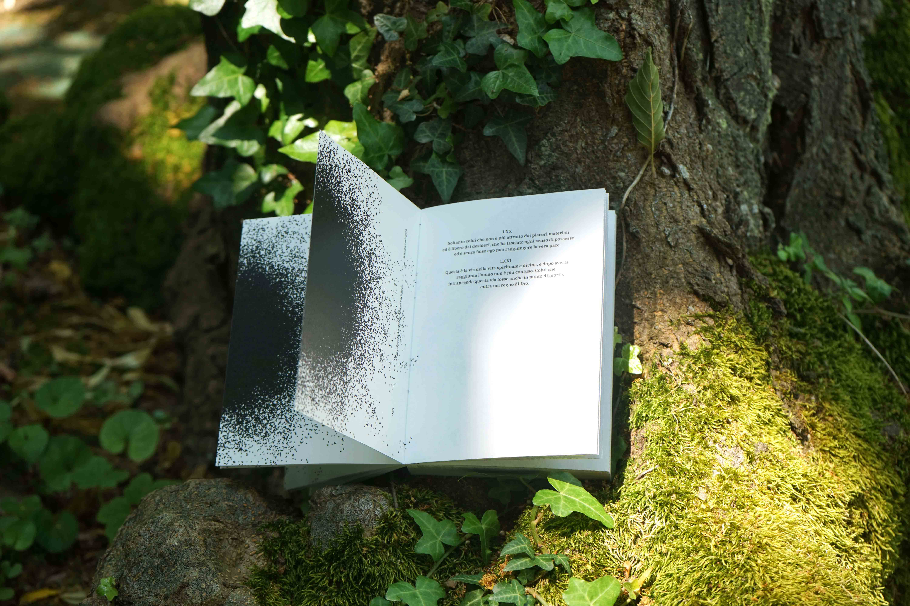
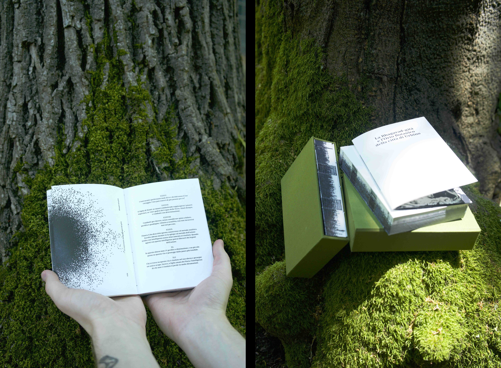
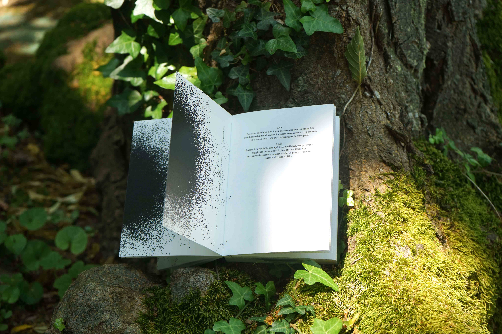
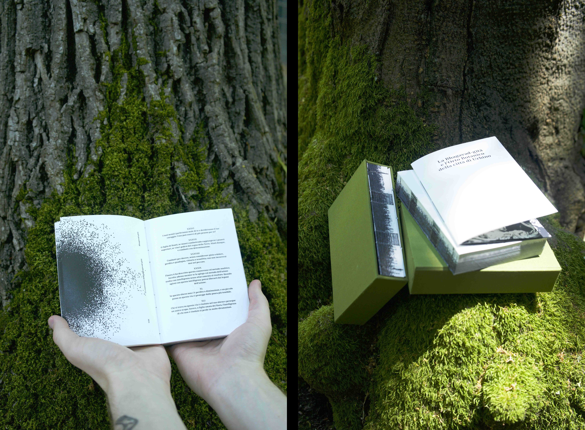
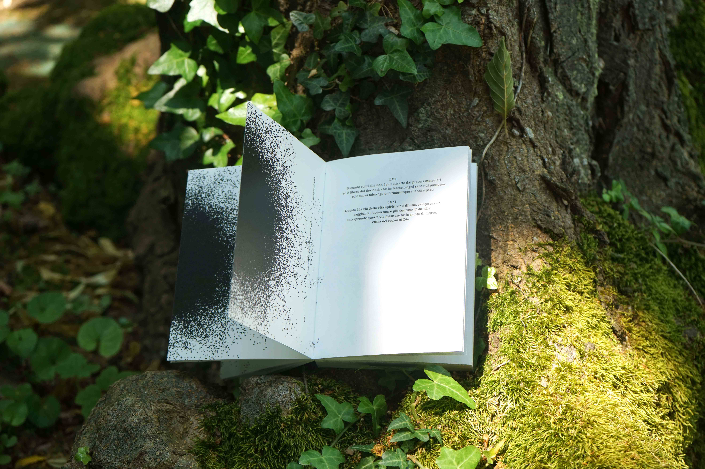
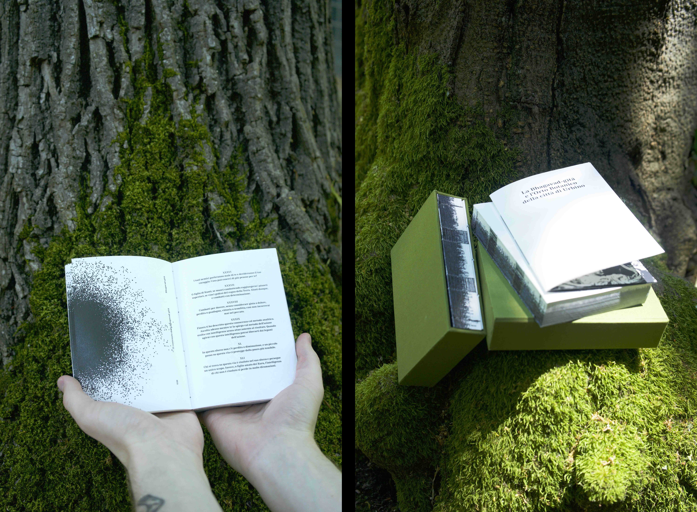

2023 — ISIA U
Supervised
by Silvana Amato
Editorial design
w/ Carlo Andrea Schlatter
and Lorenzo Ciccinato
The Bhagavad-gita, Sanskrit-language "Song of the Divine" (dated from between the third century B.C. and the first century A.D.) is one of the most important sacred texts in Indian religion. It is clear it's moral lesson about the meaning of actions and the value of destruction in the process of cyclical regeneration all beings are subjected to. This edition of the volume seeks to express that continuous process of birth and death by drawing inspiration from the Urbino Botanical Garden and its plant world, more specifically the mechanics by which moss reproduces and spreads.

